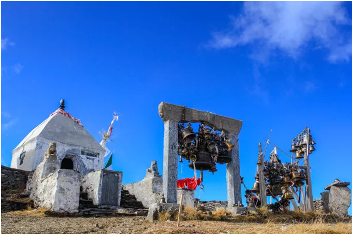

Badimalika trekking trail is the newly discovered trekking trails of far-western Nepal which offers one of the best natural landscapes. This trail is located in the Bajura district whose main attraction is the temple of Badimalika situated atop of the hillock which is 4,200 meters above sea level.
Badimalika temple is one of the major temples of Nepal which is dedicated to Bhagwati. Malika Chaturdashi is the major annual festival celebrated here during full moon in August when many Hindu pilgrimages from all over Nepal come to take the blessings of goddess Bhagawati. Another major fair takes place during the Janai Purnima.
- >

Badimalika Trekking lets you experience the remote flavor of far-western Nepal. It is the trekking trails through the most attractive hills of Bajura which provides picturesque views of Mt. Api Himal, Mt. Saipal ranges, mesmerizing Khaptad valley and a chance to sightsee Khaptad National Park where lies Khaptad lake, Khaptad Baba museum and Khaptad danda where Khaptad baba lived.